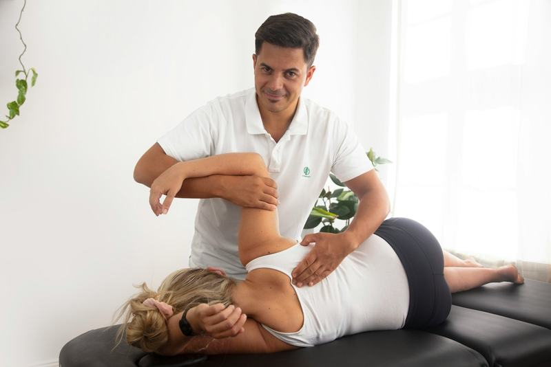
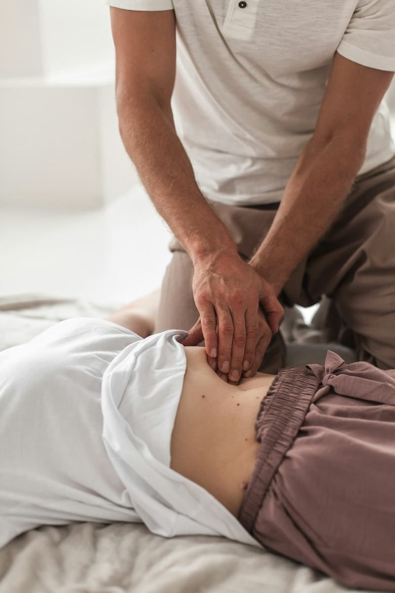
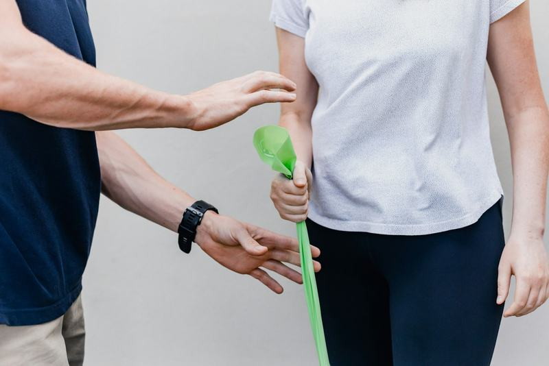
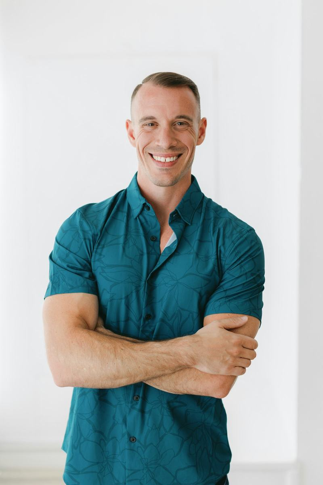
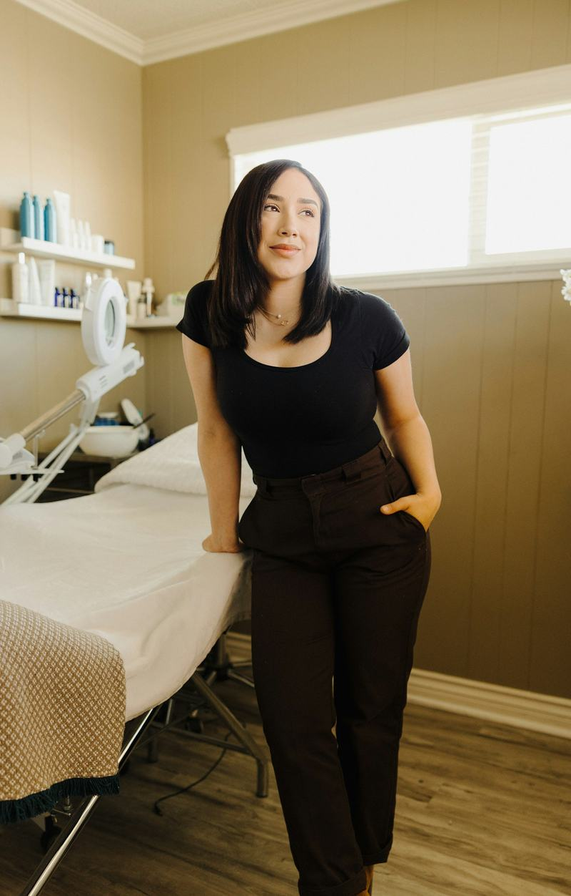
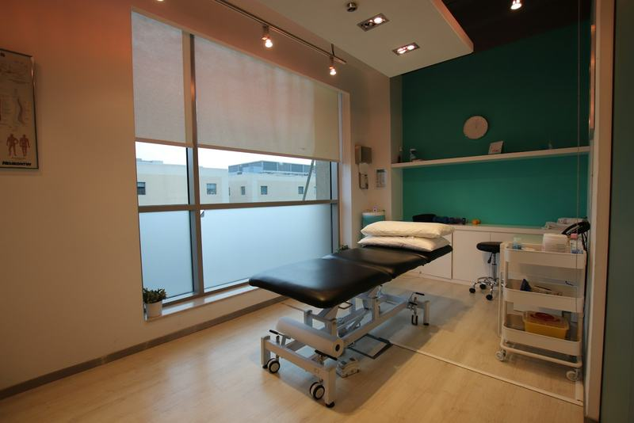
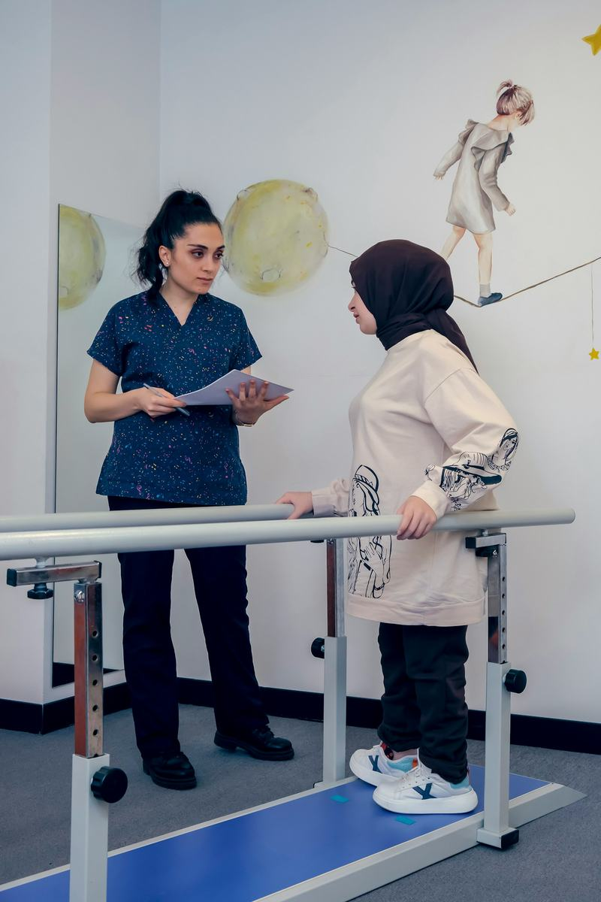
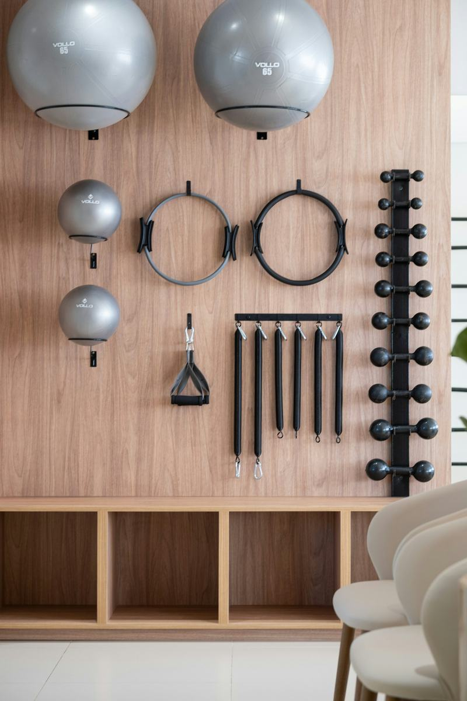
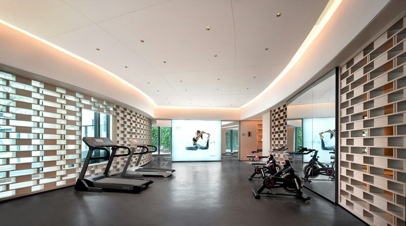

Физиотерапия · Пловдив
Върни се към движението без болка
Двама опитни физиотерапевти, 60-минутна първа оценка и писмен план с брой посещения и цена. Без направление и без излишни посещения.
- Без направление
- Писмен план след първата оценка
- Плащаш след посещението

Къде те боли? Избери и запази час
- 60'първа оценка
- 14 г.опит на водещия терапевт
- 8области, с които работим
- 0нужни направления
С какво можем да помогнем
Най-честите проблеми, с които идват при нас. Ако твоят не е тук, опиши го във формата.
Гръб и кръст
Дискови проблеми, ишиас, схващане след седене
Запази час Гръб и кръстВрат
Напрежение, главоболие, болка след дълго пред компютър
Запази час ВратРамо
Замръзнало рамо, ротаторен маншет, болка при вдигане на ръка
Запази час РамоКоляно
Връзки, менискус, болка по стълби и при бягане
Запази час КоляноТаз, бедро и стъпало
Бурсит, болка при ходене, навяхване на глезен, петна шпора
Запази час Таз, бедро и стъпалоСлед операция или травма
Протези на коляно и таз, счупвания, възстановяване на връзки
Запази час След операция или травма
Как работим
Целта е да се върнеш към това, което правиш, и да не идваш повече от нужното.
- 1
Оценка
60 минути разговор и преглед. Казваме какво се е случило и защо боли.
- 2
План
Получаваш писмен план: колко посещения, колко често и колко ще струва.
- 3
Терапия
Ръчна работа и упражнения. На всяко посещение мерим дали има напредък.
- 4
Сам вкъщи
Получаваш няколко прости упражнения със снимки, за да не се връща болката.
Три неща, които правим при всеки
Добрата физиотерапия не е само масаж. Съчетаваме ръчна работа, упражнения и обяснение.

Ръчна терапия
Работим с ръце върху мускули, стави и сухожилия, за да намалим болката и да върнем подвижността.

Упражнения
Всеки получава програма, която може да прави. Показваме я, оправяме техниката и я правим по-трудна, когато си готов.
Разбиране
Обясняваме какво е станало и какво е нормално. Когато разбереш болката си, тя по-често си отива.
Терапевтите
Двама терапевти. Знаеш при кого идваш и какъв е опитът му.

Николай Петров
Физиотерапевт, 14 години опит
Работи с гръб, врат и кръст. Често с хора, които седят цял ден, и с бегачи.
- Бакалавър по рехабилитация, 2011 г.
- Сертификат по мануална терапия
- Член на асоциацията на физиотерапевтите, № 0000

Елена Стоянова
Физиотерапевт, 9 години опит
Рамо, коляно и възстановяване след операция или спорт. Обяснява всяко упражнение, докато го покаже.
- Магистър по кинезитерапия, 2015 г.
- Обучение по следоперативна рехабилитация
- Член на асоциацията на физиотерапевтите, № 0000
Имена, дипломи и номера на членство са примерни.
Кабинетът
Светло, тихо и подредено. Има отделен кабинет за терапия и зала за упражнения.

Кабинет за терапия 
Зала за рехабилитация 
Оборудване за упражнения 
Зала за по-тежки упражнения
Цени
Цените са в евро и са ясни предварително. Първата оценка включва писмен план. Не взимаме пари за посещения, които не са нужни.
Първа оценка
60 минути
45 €
Разговор, преглед, диагноза и писмен план
- 60 минути с терапевт
- Писмен план: брой посещения и цена
- Първите упражнения за вкъщи
Терапия
45 минути
35 €
Ръчна терапия и упражнения
- 45 минути работа с терапевта
- Измерваме напредъка всеки път
- Листове с упражнения със снимки
- Най-изгодно
Пакет от 8 терапии
8 × 45 минути
260 €
Платен предварително, валиден 3 месеца. Спестяваш 20 €.
- 8 терапии по 45 минути
- Можеш да ги споделиш с член на семейството
- Часът се записва, когато ти е удобно
Допълнително
- Кинезио тейп10 €
- Листове с упражнениявключено
- Ударно-вълнова терапия30 €
Плащане в брой или с карта след посещението.
Първо при лекар, ако има:
Физиотерапията не е за всичко. Тези знаци означават, че първо трябва да те види лекар.
- Внезапна силна болка след падане или удар
- Изтръпване или слабост в крак или ръка, които се влошават
- Болка в гърдите, задух или треска заедно с болката
- Проблеми с пикочния мехур или червата заедно с болка в кръста
Запази час
Избери посещение, област, ден и час. Ще ти се обадим само ако трябва да променим нещо.
- Получаваш отговор в рамките на работния ден.
- Звъним, за да потвърдим часа и да отговорим на въпросите ти.
- Не плащаш предварително. Плащаш след посещението.
Предпочиташ да се обадиш? +359 88 000 0000
Често задавани въпроси
Нужно ли е направление?
Не. Можеш да дойдеш директно. Ако имаш снимки, ЯМР или епикриза, носи ги.
Боли ли по време на терапия?
Понякога усещаш натиск или опъване, но не трябва да е непоносимо. Кажи, и ще го намалим.
Колко посещения ще ми трябват?
Зависи от проблема. Казваме ти след първата оценка. Често е между 4 и 10 посещения.
Какво да облека?
Удобни дрехи, в които можеш да се движиш. За рамо или кръст: потник или къси панталони.
Ако не се подобря?
След две-три посещения проверяваме напредъка. Ако няма промяна, казваме го честно и те насочваме към лекар за допълнителни изследвания.
Контакти
- Понеделник – петък
- 08:00 – 20:00
- Събота и неделя
- 09:00 – 14:00
- Адресул. Примерна 33, Пловдив
- Телефон+359 88 000 0000
- Имейлclinic@example.com
Входът е на първия етаж, без стъпала. Паркирането е безплатно пред сградата.
Картата се зарежда от OpenStreetMap едва когато я поискаш.